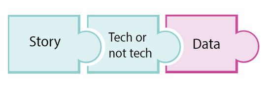
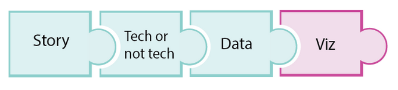
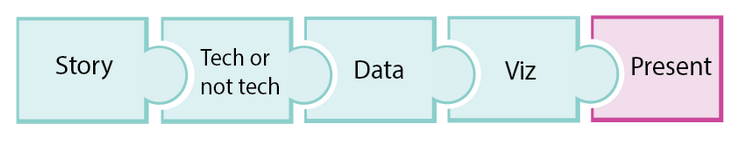

Preparándonos para comunicar nuestros Datos
Contents
Preparándonos para comunicar nuestros Datos#
Seleccionando los datos correctos#

Data#
Siguiendo el camino para presentar nuestra data… Debemos prepararnos para presentar los datos correctos.
Seleccionar los datos correctos implica incluir el contenido suficiente para comunicar los insights de forma correcta y que apoyen el punto central de la historia sin sobrecargar de información nuestro informe.
Porque es importante seleccionar nuestros insights?
Recordemos que nuestros datos son uno de los 3 puntos centrales en cualquier historia. Si nuestra data esta sucia, los resultados también serán sucios. Para cuando encontremos nuestros insights necesitamos dar a conocer de forma correcta a todas nuestras audiencias.
Garbage in, garbage out
Adaptar a nuestra audiencia
Stakeholders#
Un stakeholder es cualquier persona que pueda verse interesada en los resultados de nuestro proyecto o las actividades que derivan de los resultados.
Nuestros stakeholder pueden ser Técnicos o no técnicos.
Identificando nuestra audiencia#

Una herramienta poderosa es identificar a nuestra audiencia, describiendo los intereses sobre los resultados del proyecto y el conocimiento técnico de alguien en nuestro publico. Definir nuestra audiencia ayuda a seleccionar hallazgos personalizados para transmitir mejor nuestros conocimientos clave.
Executive Team#

El equipo ejecutivo pueden ser uno de nuestros perfiles principales
CEO
Investor
Director
Founder
Estas personas cumplen con roles no técnicos por lo cual tienen un conocimiento básico. Usualmente necesitan informar su decision haciendo uso de nuestros insights.
Project Manager#

Cuando contamos nuestra historia a nuestro proyect manager, podemos mostrar el costo total de nuestra proxima estrategia de ventas, las métricas utilizadas para medir el rendimiento de ventas de cara a los clientes o los riesgos que implica nuestro plan de acción.
Intereses orientados a objetivos
El costo total de la campaña de marketing
Métricas o KPIs
Tech Team#

Presentar el proyecto a nuestros compañeros o un supervisor técnico con alto grado de conocimiento.
Interesados en los métodos
Como replicar o continuar el proyecto
Audiencia General#

Nuestra presentación puede estar dirigida a el publico en general ya sea un cliente externo, el departamento de recursos humanos o publico en general.
Enfocados al impacto general o final del proyecto.
Con poco conocimiento técnico
Les gustaría saber que resultara si invertimos 100k en el proximo rebranding
Warning
Nuestra audiencia puede ser menor receptiva a nuestros resultados. Algunos serán mas escépticos que otros.
Puede ser nuestra audiencia sea fácilmente receptible a los cambios o puede que no, pero sin duda alguna debemos estar preparados con mas datos que apoyen nuestra idea central.
Convéncete a ti mismo, luego a tu amigo y por ultimo a una persona escéptica.
Estadísticas relevantes#
Variaciones en la data#
Luego de buscar sentido a nuestra presentación y porque es importante para nuestro storytelling. Veamos como podemos presentar ciertos datos o métricas de gran ayuda para comprensión de nuestra charla.
En ocasiones queremos comparar variables de acuerdo a una serie de tiempo. Las diferencia entre cada variable puede ser expresado bajo un numero absoluto o una taza de crecimiento (relative).
Absolute#

Un numero absoluto puede ser representado por solamente un numero en singular, e.g: que diferencia entre las ventas por unidad entre el 2017 y 2018.
Las diferencias pueden ser expresadas con un numero absoluto (50 o 40)
Si nos enfocamos en una sola variable, un numero absoluto puede ser suficiente
Cuando usamos mas de una variable, el porcentaje o ratio, es de mas ayuda.
Tip
La escala absoluta puede verse como un gran cambio para números pequeños aun cuando el cambio en términos de proporciones es verdaderamente grande.
Por el contrario los cambios en números absolutos grandes pueden verse muy significativos, aun cuando en términos de proporción no hayan sido un verdadero cambio.
Relativos#
Por otra parte, los cambios relativos en números pequeños, pueden ser percibidos como grandes cambios en términos de ratio.
El uso que le demos a cada escala depende de que deseamos presentar o responder.
Ratio#

Una forma de evitar estos cambios es calculando el radio. En una comparación de dos variables expresadas en coeficientes, por ejemplo los ingresos x cliente; donde calculamos el ingreso total del producto en dólares dividido por el número de clientes
\((\text{total product revenue / number customers} )\)
El ratio nos ayuda a normalizar nuestros valores, permitiéndonos comparar la distribución de la data y conservando una escala original.
Agregación#
Las agregaciones son números que resumen un conjunto de datos en uno solo, permitiendo tener una idea generalizada del conjunto de records. Las agregaciones mas conocidas son
Media
Mediana
Total/ sub total
La distribución
La media o promedio puede verse afectada por aquellos valores atípicos. Por esto se considera la mediana como un valor mas robusto. Nos puede llegar a suceder que la mediana de ventas de nuestro trimestre resulte de 51k, pero la mediana nos resulta en en 34k.
P-Value#
Que es el p-value?
Cuando comunicamos nuestros resultados necesitamos probar que son estadisticamente aceptables y significativos. Para esto tenemos el P-value
Un valor por debajo de \( \text{p-value} < 0.05 \) se considera un valor aceptable.
Cuanto mas bajo sea el p-value, mejor indicador.
P-value no es una prueba de evidencia, mas bien acepta o rechaza una hipótesis.
Visualizaciones para diferentes audiencias#

Una vez hayamos encontrado los insights correctos y la data correcta, escoger una visualización correcta es el siguiente paso hacia la comunicación estratégica de nuestro storytelling.
De nuevo, debemos considerar el expertise de nuestra audiencia
La familiaridad de la audiencia con el caso de estudio
Adaptar el mensaje

Para un inversor seria mas interesante visualizar los posibles ingresos si se llega a realizar, o no, una campaña de marketing.
Para un personal más técnico le seria interesante ir un poco mas aya y le gustaría complementar con un gráfico de las predicciones e ingresos reales del año pasado.
Proporcionar contexto
Una vez hayamos presentado el mensaje podemos presentar el contexto.

Al inversor podemos mostrarles las diferentes características del producto que hacen cambiar de opinion al cliente.
El personal técnico le importara conocer también las características y su importancia por proporción.
Otras buenas practicas#
Principio de pareto: el principio de pareto predica que la mayoría de salidas vienen desde una minoría de entradas. Los datos altamente relevantes provienen de datos con poca relevancia. Por lo tanto podemos presentar de forma sutil estos datos irrelevantes para eliminar el ruido en nuestra presentación.
Cuanto y que tan rápido: Nuestros visuales deben captar la atención y tener una fácil comprensión para el nivel de la audiencia.
Mas es menos: seguramente un gráfico complejo proporciona muchos insights pero toma mas tiempo su entendimiento.
McCandless Method#
Un método y paso que podemos considerar como un marco de trabajo para nuestras presentaciones, son los establecidos por David McCandless un periodista británico.
Introducir la visualización con sus nombres
Anticipar las preguntas de la audiencia
Explicar el insight
Ayudar a la audiencia a relacionarse con el visual
Escogiendo el formato más apropiado#
Presentar#

Una vez hayamos construido las visualizaciones mas convincentes, debemos establecer que formato nos ayudaran a presentar todos los resultados. Existen dos formatos básicos y generalmente utilizados.
Reportes escritos
Presentaciones orales
Antes de elegir uno de estos formatos debemos pensar en como podemos comunicar de forma estratégica nuestro proyecto de forma que cautive y sea de fácil entendimiento.
Para esto debemos considerar también las ventajas y desventajas de cada formato, considerando
Nuestra audiencia
Contenido a incluir
Requerimientos
Canal de información a utilizar.
Todos estos requerimientos nos ayudan a encontrar el mejor formato.
Preguntas#
En base a los factores que veremos afectados con nuestra presentación podemos crearnos preguntas que nos ayudan a crear la mejor presentación.
Stakeholders#
Quienes: a quienes le haremos nuestra presentación
Porque: porque necesitan conocer nuestros insights, por ser de contabilidad o por la metodología.
Como: como utilizaran nuestros insights, para tomar una decision?, para comenzar un nuevo proyecto?.
Que: información necesitan conocer, solo nuestros resultados o el impacto que generan nuestros resultados.
Contenido#
Luego que respondemos todas estas preguntas que nos ayudaran a responder el contenido que debemos incluir. Debemos enfocarnos en los resultados, conclusiones, recomendaciones o solo explicar los métodos a detalle.
Requerimientos#
Identificamos
Si los stakeholders requieren datos especiales.
Que tanto tiempo tienen para leer un reporte detallado o si es mas conveniente una charla.
Aparte de un gerente que otra persona puede estar involucrada en este reporte.
Consumo#
Necesitamos saber como sera consumido nuestra presentación. Debemos escribir un documento de Word, un notebook, blog o articulo. Podemos construir slides, pero como serán presentados estos recursos.
Los presentaremos directamente a nuestros jefes y como responderemos a sus preguntas; por email, slack o nos enviaran luego sus preguntas.
Que tan grande sera nuestra audiencia?. No podemos realizar la misma presentación para 200 personas de la misma forma en que presentamos solo para 6 personas en una sala de conferencia.
Comunicación Oral#
El formato a escoger no solo depende de la audiencia sino de las ventajas y las desventajas que nos proporciona cada formato de comunicacion
Ventajas |
Desventajas |
|---|---|
Podemos relacionarnos con la audiencia |
Sin registro permanente de lo comunicado |
Feedback inmediato |
No es recomendable para mensajes extensos, nuestra audiencia puede perder el foco en cualquier momento |
Agregamos corporal con un propósito en su significado |
Comunicación Escrita#
Ventajas |
Desventajas |
|---|---|
El formato escrito permite analizar la información en un termino de tiempo prolongado |
Al no ver la reacción de la audiencia no podemos rectificar el siguiente contenido u explicación |
Fácil de compartir cuando se trata de audiencias de gran tamaño |
El feedback no es inmediato |
Permite compartir código con stakeholders técnicos |
Cual es el formato adecuado?…#
Supongamos el siguiente ejemplo… Estamos presentando nuestros insighs a el CEO de la empresa X. Esta muy interesado en las conclusiones y desea una respuesta rápida a sus preguntas, dado que esta algo ocupado el dia de hoy.
Esta es la situación perfecta para una presentación oral. Luego de la reunion el CEO nos comunica que la decision y conclusiones sera tomada luego y no pide crear un reporte para los inversores.
Esta es una ocasión perfecta para estructurar un informe basado en nuestras conclusiones y dirigido a inversores, tomando en cuenta las preguntas y feedback que haya hecho nuestro CEO en la reunion rápida.